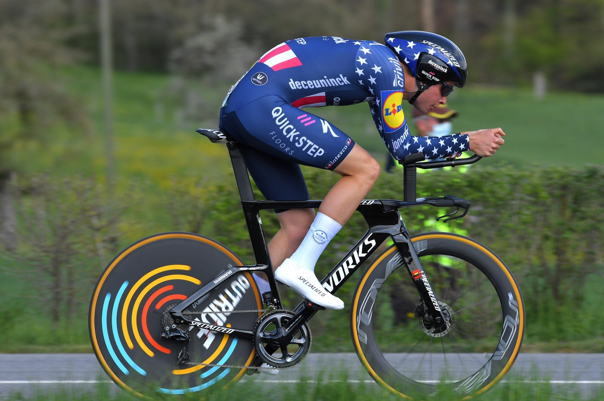
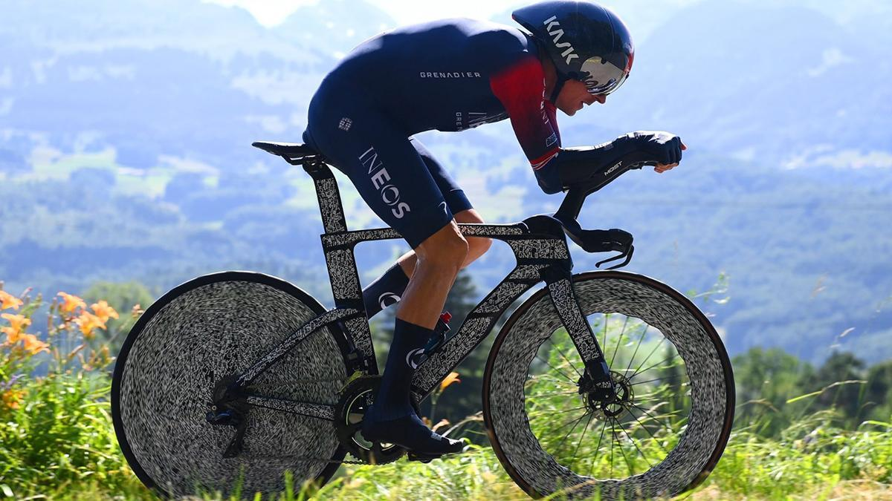

CSS «Hojas de estilo en cascada», es un lenguaje de diseño gráfico para definir y crear la presentación de un documento estructurado escrito en un lenguaje de marcado.
Utilizamos esta etiqueta en head para dar una propedad como el color o el fondo a un elemento de mismo nombre de etiqueta como todos los h1 o h3.
Utilizamos esta etiqueta en head para dar una propedad como el color o el fondo a un elemento con un único id que ha sido proporcionado antes en un párrafo o frase especifico.
Estas son algunas de las bicis que se suelen utilizar para contrarelojes en equipos como el QuickStep:
O también el equipo Ineos:
Utilizamos esta etiqueta en head para dar una propedad como el color o el fondo a un elemento de misma clase con igual nombre de etiqueta.
Indicando que párrafos tienen una propiedad en común y se le atribuirá.